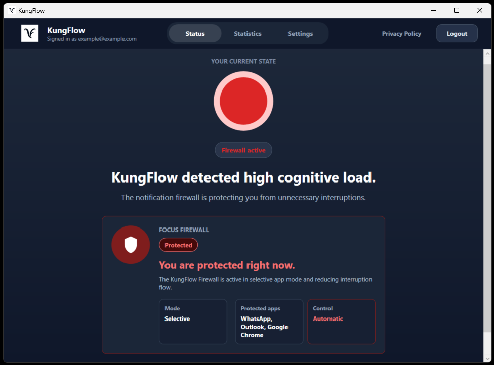
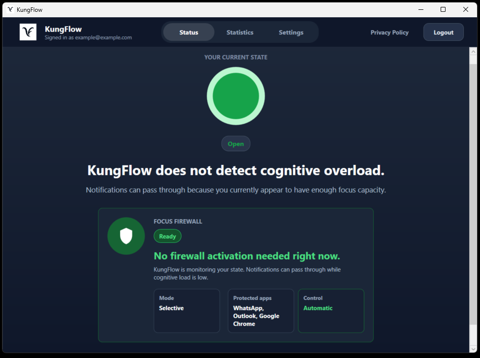
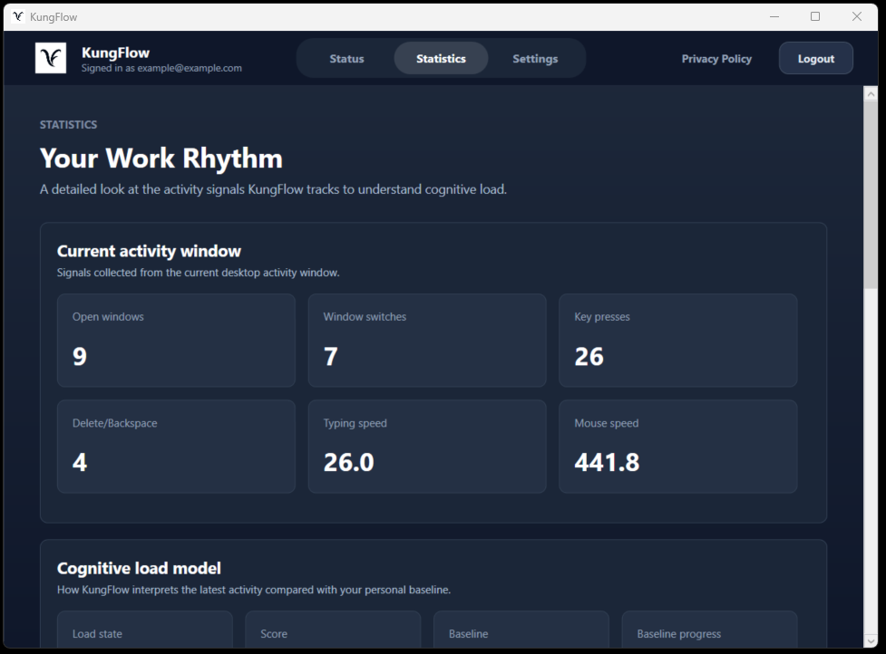
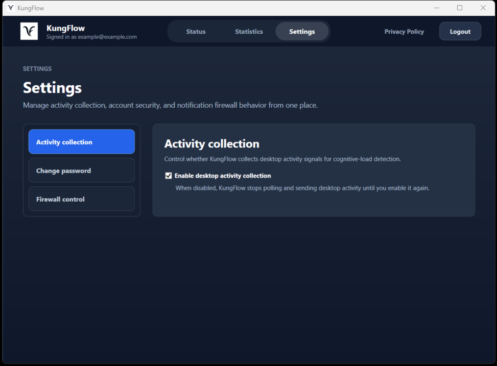

Observe your rhythm
The desktop app securely measures work patterns such as window switching, typing, and movement.
Real-time cognitive load protection
KungFlow learns how you work, detects cognitive overload as it happens, and automatically reduces interruptions when your focus matters most.
Includes the Windows desktop app · Requires Windows x64 and .NET 10 Desktop Runtime

Inside the app
KungFlow keeps the current cognitive state, behavioral signals, and notification controls together in one quiet Windows experience.



How it works
KungFlow turns everyday work signals into a clear picture of your cognitive load—without interrupting your workflow.
The desktop app securely measures work patterns such as window switching, typing, and movement.
KungFlow learns what a normal, productive work session looks like for you—no one-size-fits-all thresholds.
When overload rises, KungFlow activates the notification firewall and gives you the space to recover.
Built for your workflow
The Windows app works in real time, creating a complete view of your work session while keeping you in control.
Get KungFlow →Measures system-wide activity and controls the notification firewall.
Learns your normal work rhythm and compares new activity against your own baseline.
Keeps your status and metrics connected to the KungFlow API.